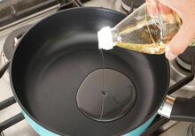
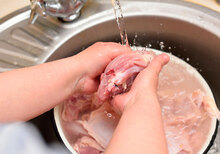
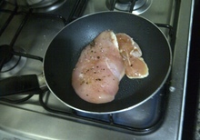
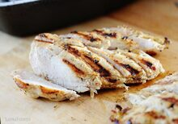
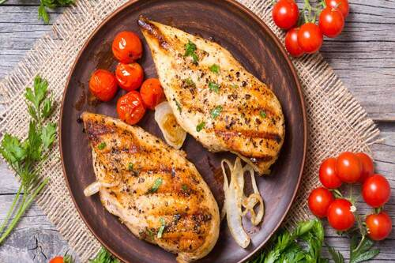

Volver al inicio
POLLO A LA PLANCHA
Ingredientes
-
2 pechugas de pollo sin hueso ni piel
-
Sal y pimienta al gusto
-
Aceite de oliva (opcional, para untar la plancha)
Paso a paso
- Calentar una plancha o sartén antiadherente a fuego medio-alto. Opcional untar ligeramente la superficie de la plancha con un poco de aceite de oliva para evitar que el pollo se pegue.

- Lavar las pechugas de pollo bajo agua fría y secarlas con papel absorbente. Sazonar ambos lados de las pechugas con sal y pimienta a gusto.

- Colocar las pechugas de pollo en la plancha caliente. Cocinar cada lado durante aproximadamente 6-8 minutos, volteándolas una vez a la mitad del tiempo de cocción. Asegurar que el pollo esté completamente cocido y alcance una temperatura interna de al menos 75 °C.

- Una vez que el pollo esté cocido, retirar de la plancha y dejar reposar durante unos minutos antes de cortarlo o servirlo. Esto permitirá que los jugos se distribuyan dentro de la carne, manteniéndola jugosa y sabrosa.

- Cortar las pechugas de pollo en rodajas o servirlas enteras. Acompañarlas con la guarnición de preferencia.
Resultado final
